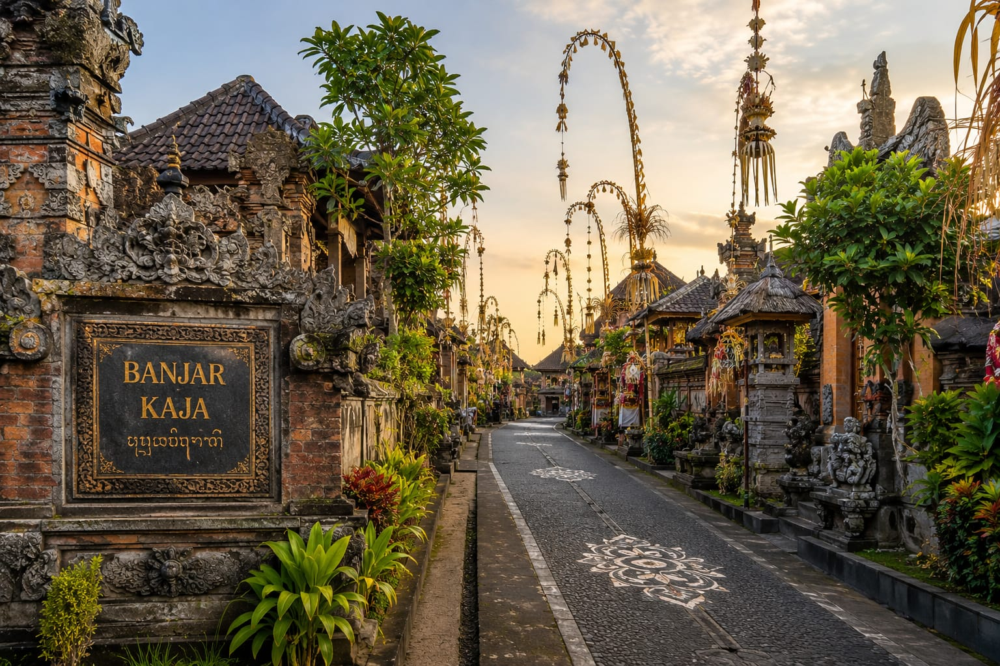

ᬩᬜ᭄ᬚᬃᬓᬮᬶᬉᬗᬸᬓᬚ
Pusat Kehidupan Adat, Sosial, dan Kebersamaan Warga Banjar Kaliungu Kaja Denpasar
Melestarikan budaya Bali, mempererat kebersamaan, dan memberikan pelayanan terbaik bagi masyarakat Banjar.
Jelajahi Banjar kenali kamiᬩᬜ᭄ᬚᬃᬓᬮᬶᬉᬗᬸᬓᬚ
Melestarikan budaya Bali, mempererat kebersamaan, dan memberikan pelayanan terbaik bagi masyarakat Banjar.
Jelajahi Banjar kenali kami

ᬲᬾᬚᬓ᭄ᬭᬄ
Banjar Kaliungu Kaja merupakan salah satu banjar adat yang menjadi bagian penting dalam kehidupan masyarakat Bali. Hingga saat ini, nilai-nilai kebersamaan, gotong royong, dan budaya leluhur tetap dijaga sebagai identitas masyarakat.
Sejak berdiri, Banjar Kaliungu Kaja menjadi pusat kegiatan adat, sosial, dan kemasyarakatan yang mempererat hubungan antarwarga.
Berbagai tradisi, musyawarah, hingga kegiatan keagamaan masih dilaksanakan secara turun-temurun sebagai bentuk pelestarian budaya.